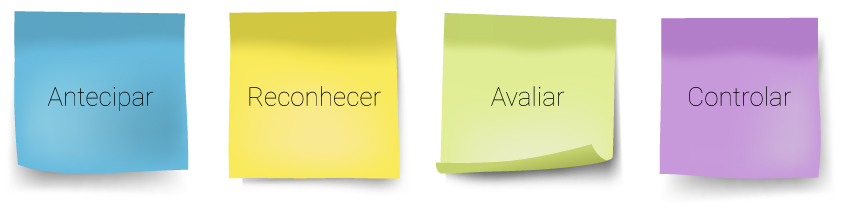

Para controlar riscos ocupacionais, é preciso realizar algumas avaliações de riscos, já que estes podem estar presentes no ambiente laboral do funcionário. As avaliações são provenientes da higiene ocupacional, a qual conta com quatro etapas:
Nas etapas antecipar e reconhecer, são realizadas avaliações qualitativas, analisando materiais, insumos, processos, resíduos que serão utilizados na transformação do produto.
A avaliação qualitativa tem como objetivo definir a existência de um fator de risco e o nível de risco, quando possível. Logo, ela é uma etapa importante na avaliação dos riscos. Essa avaliação é negligenciada por muitos profissionais e, em alguns casos, até ignorada. Trata-se do tipo de avaliação utilizado para determinar o risco em um ambiente de trabalho sem ajuda de equipamentos de avaliação ambiental, por exemplo.
A análise qualitativa é um processo em que nenhum tipo de dado quantitativo é utilizado, ou seja, não há medições para tomar uma decisão sobre a exposição dos trabalhadores. Verificam-se aspectos sobre as propriedades físico-químicas, toxicidade das substâncias, condições de processo e organização do ambiente para julgar as exposições.
Além disso, recomenda-se a utilização de checklist para reconhecer os fatores de risco nessas etapas iniciais, visando a minimizar o erro de não reconhecer adequadamente os fatores de risco do ambiente de trabalho. Podem-se também entrevistar trabalhadores e/ou cipeiros para determinar a exposição ocupacional, pois eles se baseiam em observação, experiência e modelos.
Esse tipo de avaliação vem se destacando cada vez mais para embasar a tomada de decisão sobre a necessidade de medidas preventivas, pois avaliações quantitativas bem-feitas são muito caras e nem sempre se justificam.
Após a afirmação, por meio de uma análise qualitativa, de que existe risco, devem-se fazer as seguintes perguntas:
Lembre-se de que, no caso dos agentes químicos, a FDS (Ficha com Dados de Segurança), nova redação da NBR-14725, é a principal fonte de informações.
Caso as respostas para tais questionamentos sejam negativas, reconhecido o fator de risco qualitativamente, deve-se partir para a etapa de controle.
Porém, se as respostas forem positivas, trata-se de um fator de risco quantitativo, isto é, se há um limite de tolerância, consequentemente existe um fator de risco quantitativo.
O objetivo, na avaliação quantitativa, é determinar o nível exato da exposição a dado fator de risco. Tal avaliação é feita com base em números, ou seja, a quantidade numérica é estabelecida com a ajuda de um equipamento que verifica a quantidade de vibração (acelerômetro) ao qual o empregado está exposto, por exemplo.
Visando a garantir resultados confiáveis, as avaliações quantitativas devem ser corretamente planejadas e executadas, de acordo com uma estratégia de amostragem bem elaborada, utilizando instrumentos de boa qualidade e devidamente calibrados.
Quanto a contaminantes atmosféricos que requerem subsequente análise, a mesma qualidade deve ser mantida também nos laboratórios analíticos. Falhas em qualquer parte do processo de avaliação levam a conclusões errôneas, pois “nenhuma corrente é mais forte do que seu elo mais fraco”.
Para os fatores de risco que apresentam limites, depois de qualificados, devem ser quantificados para serem comparados com os limites definidos nas literaturas.
Para uma correta avaliação quantitativa, deve-se recorrer a metodologias determinadas por órgãos para a acuracidade das informações. Para o fator de risco físico vibração, deve ser analisado o tipo de vibração (se a vibração envolve o corpo inteiro ou as mãos e os braços), conforme a metodologia proposta nas Normas de Higiene Ocupacional (NHOs) 9 e 10.
Já no que diz respeito ao etilbenzeno, a sua amostragem é definida pelo National Institute for Occupational Safety and Health, na norma NIOSH 1501, a qual detém uma metodologia específica para coleta, armazenagem, transporte e avaliação laboratorial do agente químico.
Após obter o resultado – ou melhor, o conjunto de resultados –, ele deve ser comparado com os limites de tolerância definidos na Norma Regulamentadora 15 (NR-15) e nos respectivos anexos ou, se for o caso, na ACGIH (American Conference of Governmental Industrial Hygienists), conforme descrito na NR-9.
Em alguns fóruns, discute-se a questão da prevenção e do pagamento de insalubridade. Ambos são requisitos diferentes, e o técnico em segurança do trabalho deve compreender bem a diferença entre eles.
O primeiro trabalha com métodos e limites atualizados, mais restritivos, frequentemente inferiores aos limites propostos na NR-15, a qual visa apenas à questão do pagamento ou não do adicional de insalubridade.
O quadro a seguir determina o que é qualitativo e o que é quantitativo, facilitando a compreensão:
| FATOR DE RISCO | PREVENÇÃO | INSALUBRIDADE |
|---|---|---|
| Ruído contínuo ou intermitente | Quantitativo – ACGIH Quantitativo – NHO 1 |
Quantitativo – NR-15 – Anexo 1 |
| Ruído de impacto | Quantitativo – ACGIH Quantitativo – NHO 1 |
Quantitativo – NR-15 – Anexo 2 |
| Calor | Quantitativo – ACGIH Quantitativo – NHO 6 |
Quantitativo – NR-15 – Anexo 3 |
| Radiações ionizantes | Quantitativo – ACGIH Quantitativo – NHO 5 |
Qualitativo – NR-15 – Anexo 5 |
| Trabalho sob condições hiperbáricas | - | Qualitativo – NR-15 – Anexo 6 |
| Radiações não ionizantes | Quantitativo – ACGIH | Qualitativo – NR-15 – Anexo 7 |
| Vibrações | Quantitativo – ACGIH Quantitativo – NHOs 9 e 10 |
Quantitativo – NR-15 – Anexo 8 |
| Frio | Quantitativo – NR-29 Tabela 1 Quantitativo – ACGIH |
Qualitativo – NR-15 – Anexo 9 |
| Umidade | - | Qualitativo – NR-15 – Anexo 10 |
| Agentes químicos com limites de tolerância | Quantitativo – ACGIH | Quantitativo – NR-15 – Anexo 11 |
| Poeiras minerais | Quantitativo – ACGIH Quantitativo – NHO 8 |
Quantitativo – NR-15 – Anexo 12 |
| Atividades ou operações envolvendo agentes químicos | - | Qualitativo – NR-15 – Anexo 13 |
| Agentes biológicos | Qualitativo – ACGIH | Qualitativo – NR-15 – Anexo 14 |
Figura 1 – Quadro com os fatores de risco
Nesta vídeo-aula, iremos tratar sobre a diferença entre avaliações qualitativas e quantitativas. Além disto, o conteúdo também aborda os conceitos de limite de tolerância e do nível de ação dos agentes de risco.